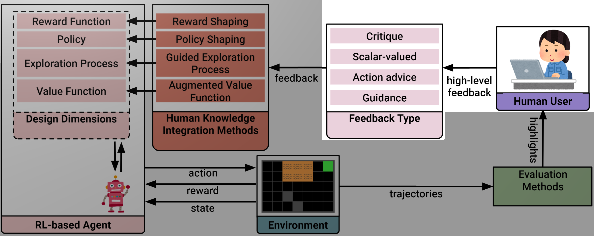

Designing Interactive Reinforcement Learning Applications
Christian Arzate Cruz
Ritsumeikan UniversityInteractive RL
Interactive RL
RL-based systems that are continuously improving because of human input.
Objective
Design considerations for interactive RL-based applications.
Introduction
Reinforcement Learning

Interactive Reinforcement Learning
 Christian Arzate Cruz, and Takeo Igarashi. "A Survey on Interactive Reinforcement Learning: Design Principles and Open Challenges" In Proceedings of the 2020 on Designing Interactive Systems Conference (DIS), 2020.
Christian Arzate Cruz, and Takeo Igarashi. "A Survey on Interactive Reinforcement Learning: Design Principles and Open Challenges" In Proceedings of the 2020 on Designing Interactive Systems Conference (DIS), 2020.
Design Overview
Creating interactive RL applications.
Christian Arzate Cruz, and Takeo Igarashi. "Interactive Reinforcement Learning for Autonomous Behavior Design" In Artificial Intelligence for HCI: A Modern Approach (Book Chapter), 2021.New Interaction Methods
Using different types of high-level feedback.
Personalized Models
How to use different knowledge integration methods.
Explainable RL
Exposing the internal components of the agent.
Research Goals
New interaction methods
Communication channels
Personalized models
Users' intentions
Explainable RL
Tell me why
New Interaction Methods
Design Considerations
We need to consider the high-level feedback
and how to use it.
High-level Feedback
- Natural language
- Demonstrations
- Sketches
- Eye gaze
Feedback Types
Critique
It's binary feedback that indicates if the last chosen action by the agent was satisfactory.
- Action: Move forward
- Feedback: Incorrect
Scalar-Valued
It's a critique with a scalar-valued rating.
- Action: Move forward
- Feedback [-1, 1]: -1
Action Advice
The human user provides the agent with the action they believe is optimal.
- Action: Move forward
- Feedback: Move right
Guidance
The human user specify the goal object(s) in the environment.
- Action: Move forward
- Feedback: Avoid lava,
Go to the green square
MarioMix
Finding the Right Playstyle
We search for playstyles using gameplay traces by the users.

Christian Arzate Cruz, and Takeo Igarashi. "MarioMix: Creating Aligned Playstyles for Bots with Interactive Reinforcement Learning" In Extended Abstracts of the Annual Symposium on Computer-Human Interaction in Play (CHI Play), 2020.
Demo
Design
- High-level: Demonstrations
- Feedback: Action advice
Summary
Personalized Models
Design Considerations
Selecting how to adapt the RL-based model according to the type of feedback.
Reward Shaping
Adapting the reward function by hand to fit the user's intentions.
- Lava: -1
- Move: 0
- Goal: 1
- Lava: -0.5
- Move: 0.1
- Goal: 1
Policy Shaping
Overriding the original policy of the agent.
- Action: Forward
- Action: Right
RL-based PCG
Co-creativity
Designing game levels with personalized AI suggestions.
Felix Eckert
(Local) Demo
Design
- High-level: Demonstrations
- Feedback: Action advice
- Knowledge integration: Reward shaping
References
- Khalifa, Ahmed, et al. PCGRL: Procedural content generation via reinforcement learning. Proceedings of the AAAI Conference on Artificial Intelligence and Interactive Digital Entertainment. Vol. 16. No. 1. 2020.
- Jiang, Zehua, et al. Learning Controllable 3D Level Generators. Proceedings of the 17th International Conference on the Foundations of Digital Games. 2022.
Summary
Explainable RL
Design Considerations
Presenting the model in a useful and easy-to-understand manner.
Explainable RL
Display the current policy and why the agent selected a given action.
Why?
- Reward function
- Value function
- Policy
- State
Explainable RL
Explain the main elements that contribute to selecting an action at different time scales.
Data and time
- Principal Component Analysis
- Instant, mid-term, and long-term goals
Interactive Explanations
Interactive Explanations
Natural language templates for a two-way communication method.

Christian Arzate Cruz, and Takeo Igarashi. "Interactive Explanations: Diagnosis and Repair of Reinforcement Learning Based Agent Behaviors" In IEEE Conference on Games (CoG), 2021.
Demo
Design
- [7, 8] Current action
- [1-4] Most relevant elements in the state
- [9] The short-term goal
- [Center Box] Contrast the taken action with another one
Summary
The End
Interactive RL
New interaction methods
Communication channels
Personalized models
Users' intentions
Explainable
RL
Tell me why
How to use of different high-level feedback and
knowledge integration methods depending on the application.